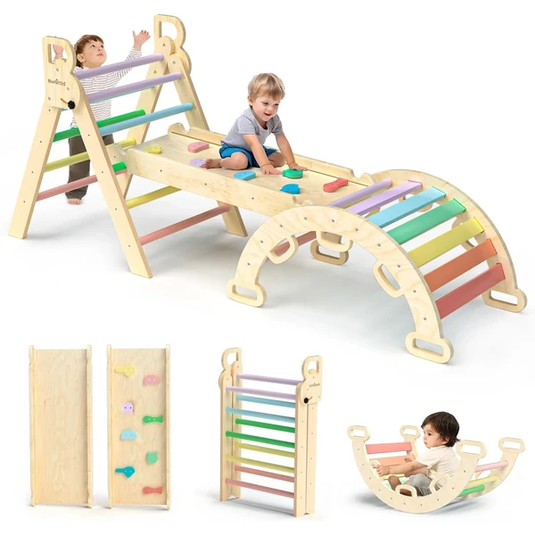
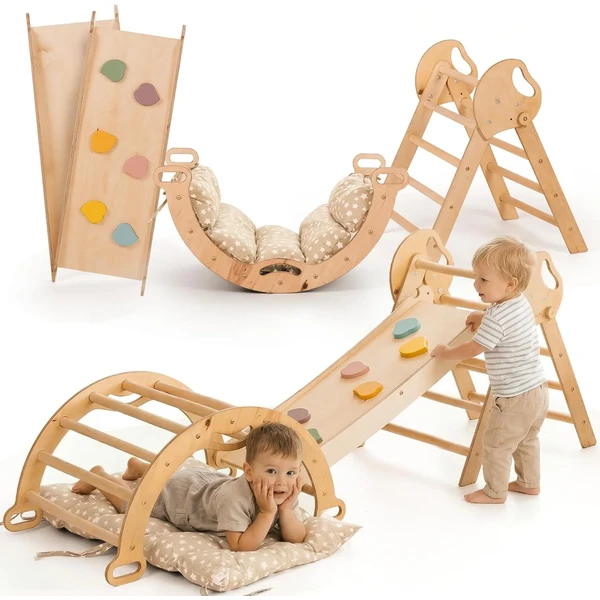
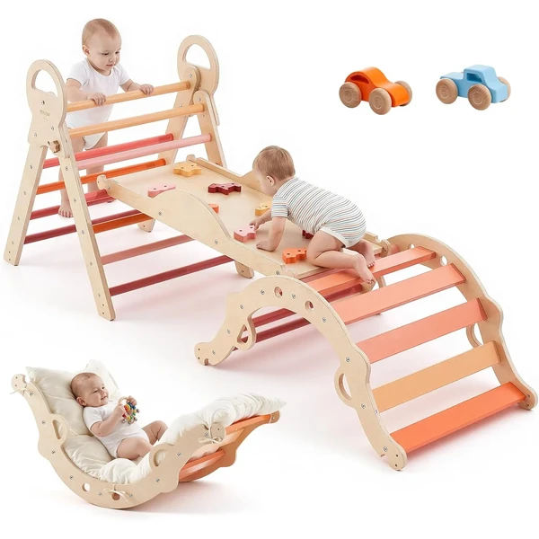
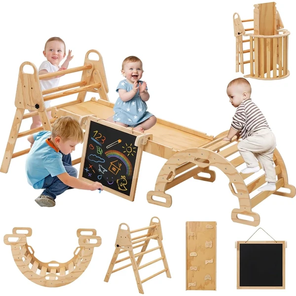
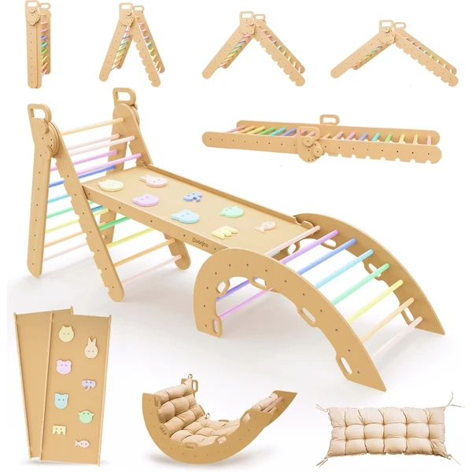
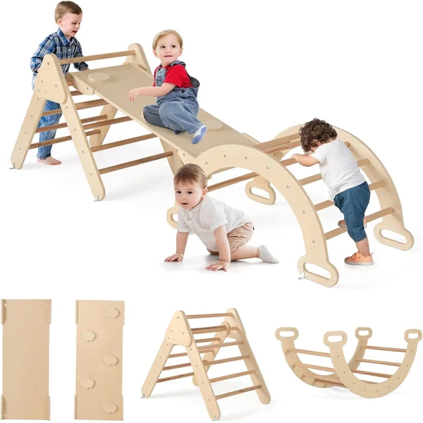

Triángulo de escalada 7 en 1 BlueWood
Set de escalada Montessori 7 en 1 con triángulo, arco y tobogán en madera maciza, plegable para guardar fácilmente. Un clásico gimnasio Montessori para trabajar el equilibrio y la fuerza.
⭐ ¿Por qué nos gusta?
- ✔ Combina triángulo, arco y tobogán en un set.
- ✔ Estructura plegable, fácil de guardar.
- ✔ Madera maciza resistente.
💬 Lo que más destacan las familias
Las familias destacan que combina varias piezas en un mismo set y que se pliega con facilidad cuando no se usa.
Ver en Amazon

Estructura de escalada 5 en 1
Estructura de escalada Montessori 5 en 1 con triángulo, arco y balancín, fabricada en madera de abedul y tilo. Ofrece varias combinaciones de juego para trabajar el equilibrio y la coordinación.
⭐ ¿Por qué nos gusta?
- ✔ Cinco elementos combinables: triángulo, arco y balancín.
- ✔ Madera de abedul y tilo de calidad.
- ✔ Montaje sencillo con herramientas mínimas.
💬 Lo que más destacan las familias
Es una de las estructuras más comentadas por la variedad de combinaciones de juego que permite con las mismas piezas.
Ver en Amazon

Gimnasio Montessori plegable VEVOR
Gimnasio Montessori plegable con nueve modos de juego distintos y diseño modular tipo triángulo Pikler. Fácil de montar y de guardar, con dos coches de juguete adicionales incluidos.
⭐ ¿Por qué nos gusta?
- ✔ Nueve modos de juego en una sola estructura.
- ✔ Diseño modular, fácil de montar y guardar.
- ✔ Incluye dos coches de juguete adicionales.
💬 Lo que más destacan las familias
Se valora el diseño modular, que permite adaptar la estructura a distintos modos de juego según el espacio disponible.
Ver en Amazon

Triángulo de escalada 8 en 1 interior
Triángulo de escalada Montessori de interior con ocho modos de juego distintos, incluido un arco combinable. Diseño plegable en madera clara, pensado para adaptarse a espacios pequeños.
⭐ ¿Por qué nos gusta?
- ✔ Ocho modos de juego diferentes.
- ✔ Estructura plegable para ahorrar espacio.
- ✔ Diseño en madera clara y minimalista.
💬 Lo que más destacan las familias
Se valora que el diseño resulte discreto y estético, más allá de su función como estructura de escalada.
Ver en Amazon

Triángulo Pikler grande 9 en 1
Triángulo Pikler grande con cinco ángulos ajustables, pensado para acompañar la escalada Montessori desde el año hasta pasados los siete. Estructura plegable de madera de abedul maciza, fácil de guardar contra la pared.
⭐ ¿Por qué nos gusta?
- ✔ Cinco ángulos ajustables según la edad.
- ✔ Pensado para crecer con el niño hasta los 7+ años.
- ✔ Se guarda plegado contra la pared.
💬 Lo que más destacan las familias
Las familias destacan que los ángulos ajustables permiten seguir usándolo según el niño va creciendo.
Ver en Amazon

Triángulo de escalada 7 en 1 GOPLUS
Triángulo de escalada Montessori con tres piezas combinables y una rampa reversible, fabricado en madera de haya maciza. Pensado para acompañar el crecimiento del niño con varias formas de juego.
⭐ ¿Por qué nos gusta?
- ✔ Tres piezas combinables entre sí.
- ✔ Rampa reversible con dos caras de juego.
- ✔ Madera de haya maciza y resistente.
💬 Lo que más destacan las familias
Se valora la estabilidad de la estructura y que la rampa reversible ofrezca dos formas distintas de juego.
Ver en Amazon